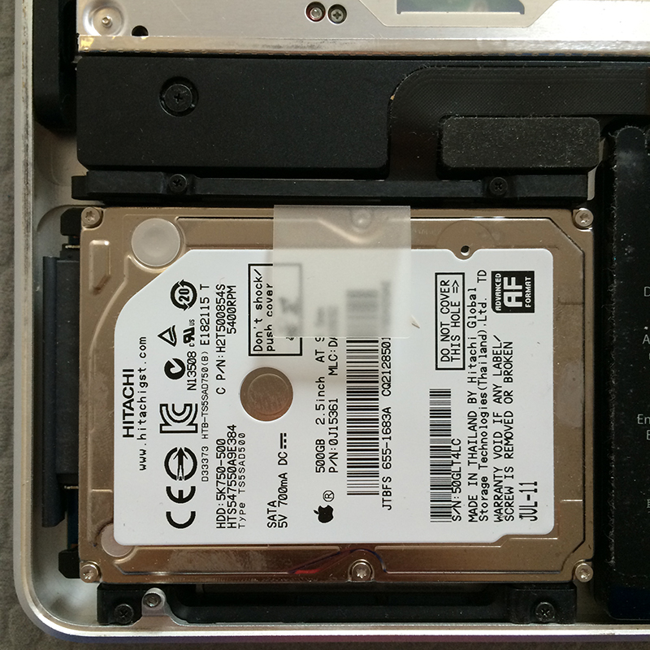

相信很多人笔记本用了三四年就会变得非常慢，换电脑不仅是笔不小的开支，熟悉新电脑也需要花时间。那么何不试试升级一下老笔记本，旧貌变新颜，重新获得飞一样的使用感受。
【注意】：操作有风险，出现问题本文不负责。
前几天奇异果好奇OSX 10.10 Yosemite系统是种什么样的使用体验，就升级了一把，谁知道no zuo no die，why you try。升级完系统后，电脑出现症状，休眠之后无法唤醒，重起之后无法进入系统。还好奇异果升级前及时备份了所有数据！（一定要养成经常备份的好习惯。）用U盘引导启动后用磁盘修复工具一检查，提示磁盘有错误，建议格式化重装。Oh,卖糕的！
水果君用的电脑是2011年的15‘MacBook Pro（early 2011款），服役了近四年，又经常拿它算模拟、跑程序，4G的内存严重吃紧，老硬盘的读写速度也极大制约了速度。水果君心一横，一不做，二不休，趁重装电脑的时机，把硬件也更新一下，体验一把站在风口的猪——飞一般的感觉。
Step 1 制做U盘启动盘
要格式化重装，需要首先制做一个启动盘，OS X的系统免费了，可以从Apple Store上直接下载Yosemite，5G多，8G的U盘就可以装下。下载完成后需要以下操作：
- 格式化U盘。打开”磁盘工具”，左边选择要格式化的U盘，右边点抹掉，格式选择第一个，名称保持Untitled（这个主要是为了和后面对应）。（如图1）
- 打开终端（Terminal，见图2），里面输入如下内容：
sudo /Applications/Install OS X Yosemite.app/Contents/Resources/createinstallmedia –volume /Volumes/Untitled –applicationpath /Applications/Install OS X Yosemite.app –nointeraction
- 上面这段的意思是把从Apple Store下载的Yosemite用createinstallmedia这个工具放到名为Untitled的U盘里做成启动盘。[^1]
Step 2 买硬件
我是从美国Amazon上买的，算上税和京东差不多，主要是SSD硬盘，内存和放到光驱的硬盘托，外加一个多功能螺丝刀。
硬盘：
品牌
当时备选的有两款，三星和Kingston，三星价格更贵一些，读写速度快一些，保修好像是五年，Kingston是三年，读写慢10%左右。考虑到这次升级估计也就最多再用三四年，选了Kingston，不过之前看升级攻略，网上大多数教程用的是三星。硬件这个东西，一份钱一份货，可以根据实际情况选择。
容量
容易备选是250G和500G两个等级，Kingston比较坑的是只有240G和480G两个选择，比三星略小些。最后选择的是kingston的240G的，把500G的电脑上原来的硬盘也用上，240+500的组合对目前来说够用。（三星容量的还有各种不同版本，价格也差异不少。）
当时比较的是以下两款：
Samsung 850 EVO 250GB 2.5-Inch SATA III Internal SSD (MZ-75E250B/AM)
Kingston Digital 240GB SSDNow V300 SATA 3 2.5-Inch Solid State Drive with Adapter (SV300S37A/240G)
内存
内存买的Crucial的16GB(8GBx2) DDR3-1600HZ，据说是2011款Mac能支持的最大容量和主频。内存这个东西，大点总没坏处，当然，如果选8G的会便宜不少。
硬盘光驱位置托盘
这货在英语里叫Hard Drive Caddy Tray for Apple Unibody MacBook，很便宜，质量参差不齐，可以买个贵点的。
螺丝刀
只需要T6和00两个型号（图3）。
Step 3 拆拆拆！
最激动人心的时刻到了！沐浴更衣之后，开拆！记得一定要关机！！！
（从左到右：螺丝刀，托盘，SSD硬盘，内存）
开盖
- 先打开后盖，这里面螺丝长短不一样，可以放到各自对应的位置，右上三个是长螺丝。打开后不得不赞叹一下苹果的工艺，非常紧凑、高效美观。
断电
- 进行下面操作前要先把这个位置电池给主板的供电线拔掉，不要带电操作。
换内存
- 内存两侧有个塑料卡子，轻轻一掰内存就能出来，然后照原样把新的内存插回去。在插上面一条的时候轻轻向下（而不是平推）会容易一些。
换硬盘
硬盘上下有四个黑色螺丝固定，依次拧下。
把左侧固定的数据线拔下。
把硬盘左右四个螺丝拧到新买的SSD上，再照原样给SSD安上数据线，固定回去。

把原来的硬盘换到光驱位置
光驱这个年头是越来越没有什么用了，新出的笔记本也大多数放弃了光驱。不过老Mac也正因为有光驱，才给升级带来了更多的可能。
这一步比较麻烦，因为光驱上面有一些数据线，拿出光驱前先要拔掉右侧三组数据线（右边最大的三个方框）。然后再去掉两组数据线的螺丝(上侧2个)和三组光驱螺丝。
- 把电脑原来的硬盘放到买的托盘里，上好螺丝。再装回光驱位置。
至此，大功告成，欣赏一下胜利的果实。
合上后盖，装系统吧。插上做好的启动盘，开机，按option，从U盘启动，格式化一下新的硬盘，装上系统和软件[^2]。享受秒开Photoshop的感觉吧！
试用了两天，有种新买了台电脑的感觉。只可惜，大好的春假就献给了它。
总共装进去了一块SSD硬盘，两条内存，一个硬盘托，拿出来了一个光驱，两条内存（2GX2）。这两条内存水果君准备放到自己第一个笔记本上，换下原来的1GX2的内存，再买个64G的SSD换上去，又能拯救一台古董机。
1: https://support.apple.com/en-us/HT201372
2: 之前很多人提到Yosemite不兼容许多软件的问题，但现在Yosemite正式版出来有半年了，设计方面常用的软件都没什么问题。AutoCAD需要用2015版，学生可以免费用三年；Adobe系列试过CS5和6都没有问题，其它还试过QGIS2.8, R, Python都没问题，就是一个Mac状态监控软件iStat需要升级到最近版本。